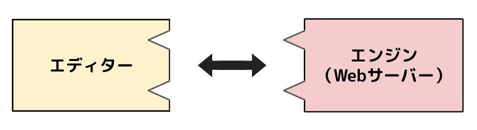
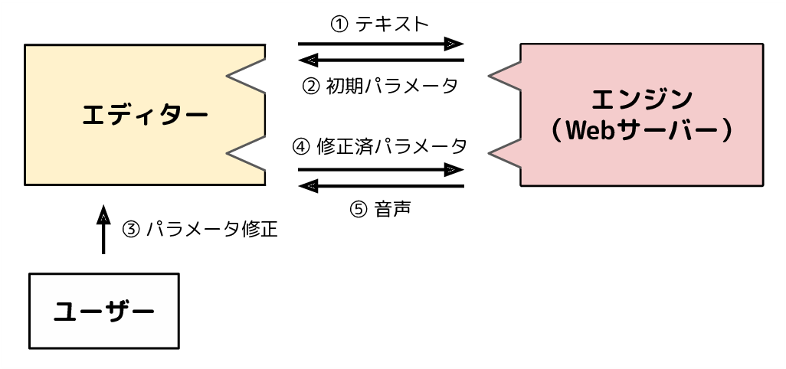
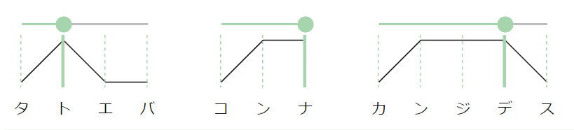
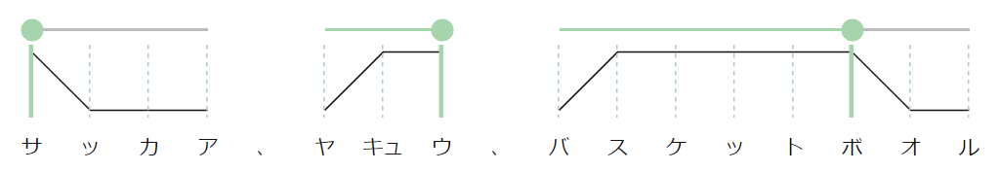
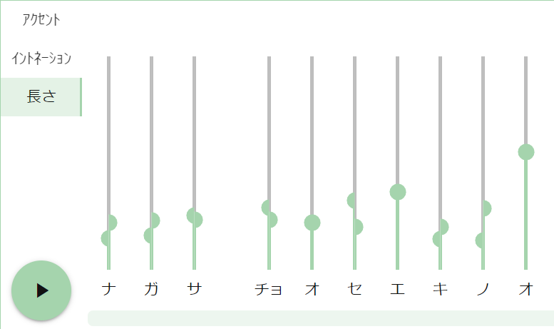

この記事は ドワンゴ Advent Calendar 2021 12/25 の記事です。
テキスト音声合成ソフトウェアの VOICEVOX（ボイスボックス） は、キャラクター部分を除いてオープンソース・ソフトウェアです。ソフトウェアもキャラクターも無料で使えて、初心者でも使い方がすぐわかるよう心がけて制作されています。
VOICEVOX | 無料で使える中品質なテキスト読み上げソフトウェア
このVOICEVOXですが、同じUIで異なる音声合成エンジンを同時に使えるようにする計画が進行中です。
複数のエンジンで音声合成できるようにする #429 VOICEVOX/voicevox
一般的に、音声合成エンジンの作成はそこそこ簡単にできるのですが、それをソフトウェアとして世の中に出すのはかなり大変です。ですが前述の方法でVOICEVOXのUIと連携する形でリリースすれば、ソフトウェア化する手間を大幅に省くことができます。そうやっていろんな人が作った音声合成エンジンがVOICEVOXのUIで使えるようになったら、とても楽しそうです。
そこでこの記事では、エンジン作成の助けとなるような情報を紹介したいと思います。最初にVOICEVOXのUI（エディタ）と音声合成エンジンの関係を紹介してから、VOICEVOXエンジンの内部の仕組みを紹介してみたいと思います。
VOICEVOXのエディタとエンジンの関係
VOICEVOXはユーザーの操作を受け付けるエディタ部分と、パラメータを受け取って音声合成をするエンジン部分が明確に分かれています。エンジン側はWebサーバーをローカルPCで起動する形式になっており、エディタ側からHTTP通信を介して音声合成する仕組みになっています。
VOICEVOXのエンジンは、テキストから音声合成するためにAPIを２つ提供しています。１つ目は「テキストを音声合成に必要なパラメータに変換するAPI」、２つ目は「そのパラメータから音声を合成するAPI」です。
エディタはまず、入力されたテキストを、１つ目のAPIでパラメータに変換します。このとき、パラメータがユーザーの意図と異なっている場合は、音声を聞く前に修正することができます。その後修正されたパラメータを、２つ目のAPIで音声合成して、再生します。もし音声がユーザーの意図と違っていた場合は、パラメータを修正することで音声を直感的に調整できる、という仕組みです。
VOICEVOXのパラメータには、ふりがな（音素）・アクセント・音の高さ・音の長さを採用しています。普通の読み上げ音声をほしいユーザーは、読み方が間違っているときにふりがなやアクセントを修正すれば目的を達成できます。よりキャラクターらしい音声がほしいユーザーは、音の高さや長さを細かく調整して、表現豊かな音声を得ることもできます。
VOICEVOXのエンジンAPIの詳細なドキュメントはこちらにあります。
voicevox_engine API Document
ちなみにエンジンをWebサーバーにしているのは、サードパーティシステムから連携しやすいと考えたためです。エンジンを起動してHTTPリクエストを送るだけで音声合成が可能です。例えば読み上げソフトや、動画作成ソフトで活用されています。VOICEVOXのエンジンにAPIの仕様を合わせておけば、VOICEVOXのエディタからだけでなく、VOICEVOXのサードパーティシステムから容易に連携できるため、様々な恩恵を期待できます。
どのようなサードパーティシステムがあるかを調べるのには、VOICEVOXに関する情報が集約されている VOICEVOX協同組合 が便利です。
VOICEVOXのエンジン内部のデータフロー
先ほど、VOICEVOXのパラメータを４つ（音素・アクセント・音の高さ・音の長さ）紹介しました。VOICEVOXと連携するエンジンは、これらのパラメータがなくても使えるようにしたいと考えています。ですが、これらのパラメータもVOICEVOXと揃えると、VOICEVOXエディタの恩恵をより多く受けることができます。
そこでここから、これら４つのパラメータとその抽出方法を１つずつ簡単に紹介します。独学で勉強したので情報が正確ではないかもしれません。ご了承ください。
音素
音素とは、子音や母音といった音声の最小単位で、日本語の場合はローマ字とほぼ１対１対応します。音素は色んな種類がありますが、とりあえず VOICEVOXが想定する音素 が網羅されていれば十分だと思います。
テキストを音素に変換するのは OpenJTalk で可能です。漢字や助詞の「は」や「へ」も、文脈を加味して音素に変換できます。OpenJTalkはバイナリをaptなどでインストールすれば利用可能ですが、 pyopenjtalkライブラリ を用いてPythonで利用するのが簡単でおすすめです。OpenJTalkの出力から音素を取得するのは openjtalk_label_getterのコード が参考になると思います。
OpenJTalkの出力する音素は意図とずれていることがかなり多いため、機械学習のデータとして用いる際は一度全て確認しておくと安心かもしれません。もしくは音声データ数を増やして1000以上程度にすると、音素が間違っていてもそこまで機械学習に影響が出なくなる印象があります。
アクセント
日本語は、１つのアクセントを持つアクセント句がいくつも繋がっていると解釈できます。たとえばこんな感じです。
アクセントは基本的に上がって下がるのですが、そのパターンは「最初が上で、即座に下がる」「最初上がって、下がらない」「最初上がって、どこかで下がる」の３種類しかありません。
これらのアクセントは、「どこで下がるか」によって一意に定まります。VOICEVOXでは、この下がる位置をアクセント句ごとに持っておいて、スライダーで調整できるようになっています。
ちなみに、アクセントがどこで下がるかの情報もOpenJTalkで取得できます。VOICEVOXに抽出コードがあるので、参考になりますと幸いです。
音の高さ
表現豊かな音声合成を実現するには、イントネーション（抑揚）がかなり効いてきます。日本語は抑揚を音の高低で表現するので、抑揚を調整可能にするためには音の高さを変えられるようにする必要があります。VOICEVOXはモーラごと（≒音素の母音ごと）に音の高さを設定できるようになっています。
モーラごとの音の高さは、その音の区間のF0（基本周波数）を音量で加重平均した値を用いています。F0の抽出は WORLD や、そのPythonラッパーの PyWORLD が便利です。（音の区間を得る方法は次の項目で紹介しています。）
音の長さ
表現豊かな音声合成を目指そうとすると、発話のリズムも気になってきます。VOICEVOXでは、音素の長さを変えられるようにすることで、発話のリズムを調整できるようになっています。
音素の長さを調整可能にするためには、音素の長さデータを機械学習モデルに入力するのが手っ取り早いです。そのためには、音声のどの範囲が何の音素なのかをラベリングする必要があります。
ITAコーパス マルチモーダルデータベース は、人力によるラベリングが行われているのでお試しに最適だと思います。もしくは、音声データ数が多ければ自動ラベリングでもそこそこの性能が出ます。 Julius を用いれば自動ラベリングが可能です。詳しくは こちらのコード が役立つかもしれません。
おわりに
この記事では、VOICEVOXのUIと連携可能な、オリジナルの音声合成エンジン作成の助けになればと思い、VOICEVOXのエディタとエンジンの関係性や、エンジン内部のデータフローを紹介してみました。
VOICEVOXでやりたかったことの１つが、趣味で作った音声合成を簡単にリリースできる方法にするということです。もしよかったら、ぜひ音声合成エンジンAPIをVOICEVOXと連携可能な形で開発し、リリースして頂けるととても嬉しいです。
（現在はまだ別エンジンとの連携ができていません。状況は こちらのIssue をご参照ください。）
また、VOICEVOXは音声合成技術をより高度なものにするために、研究開発に力を注ぎたいと考えています。しかし、ソフトウェアのリリース作業や、キャラクター追加などもあり、時間的リソースが厳しく、研究開発があまりできていないのが現状です。
そこで、一緒に音声合成技術の研究開発ができる方を募集したいと考えています。機会があれば研究開発コミュニティを作りたいと思いますので、もしご興味あれば生放送にいらしてカミングアウトしてください！
生放送は毎日23時頃からニコ生で行っています。放送開始時にツイッター @hiho_karuta で告知しています。お気軽コメントしてください。
最後になりましたが、別エンジンとの連携機能開発には、 COEIROINK 作者のシロワニさんから多大なご協力を頂いています。無茶を聞いてくださりとても感謝しています！本当にありがとうございます！！